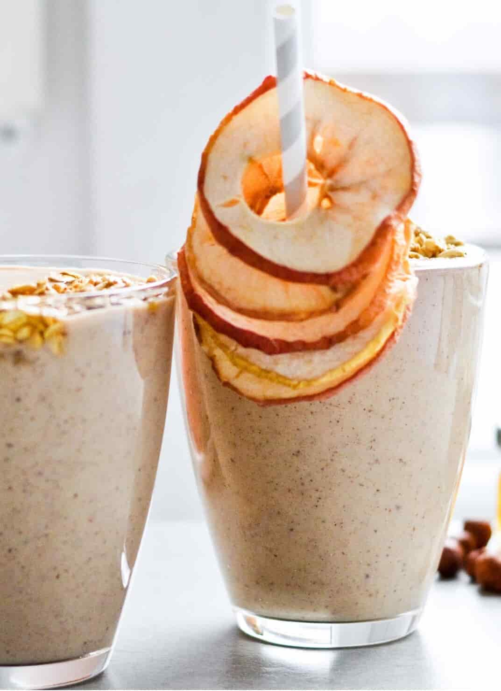
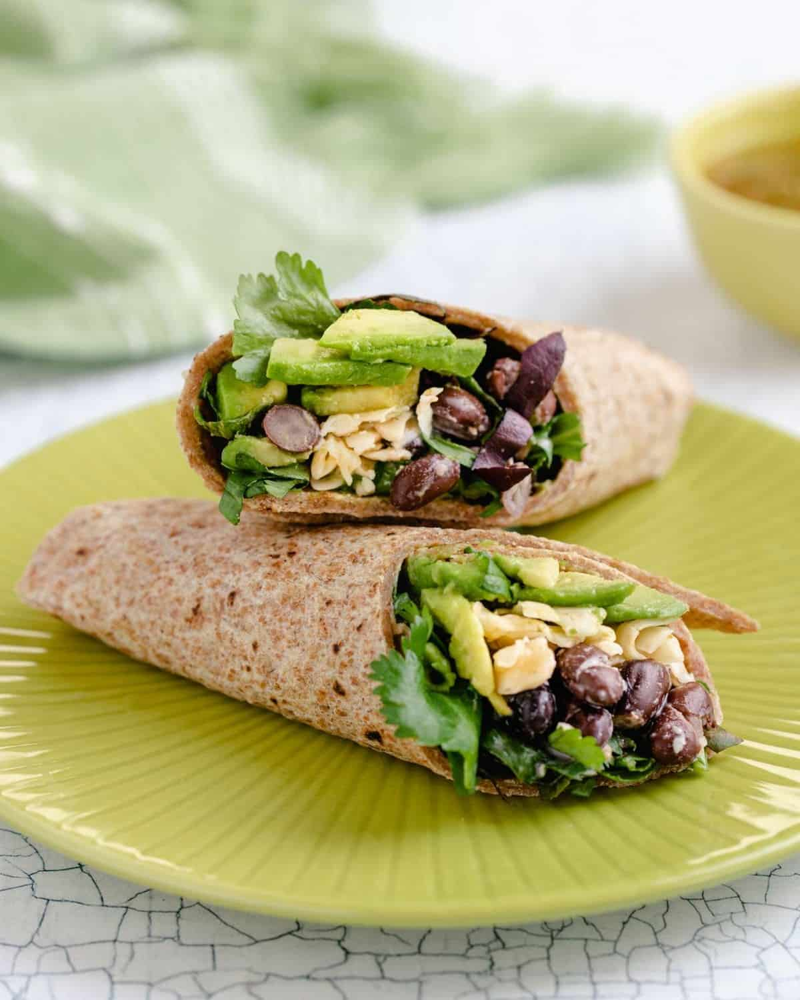
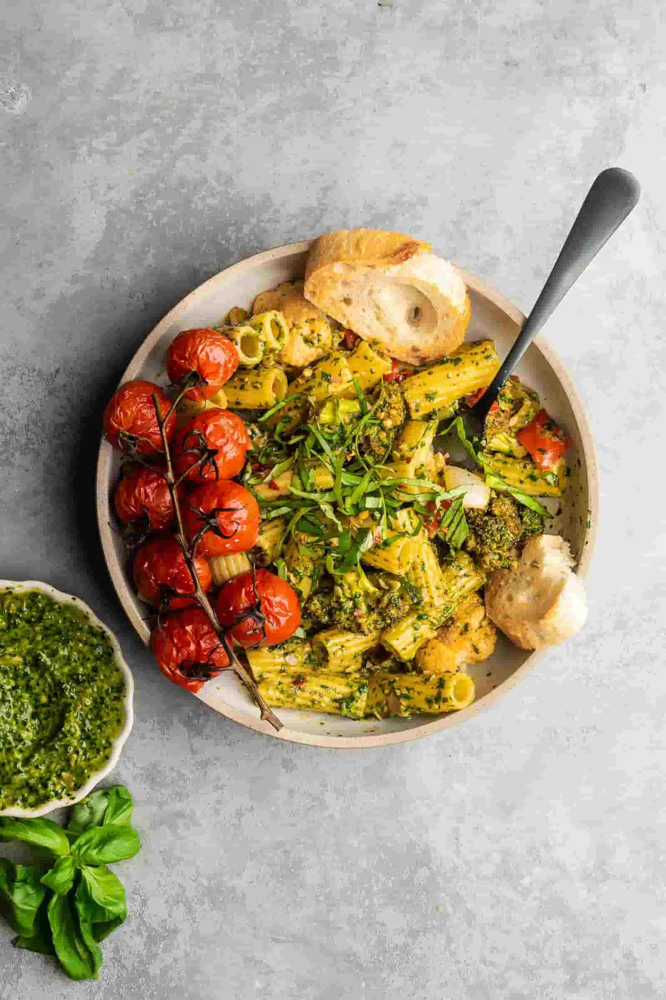
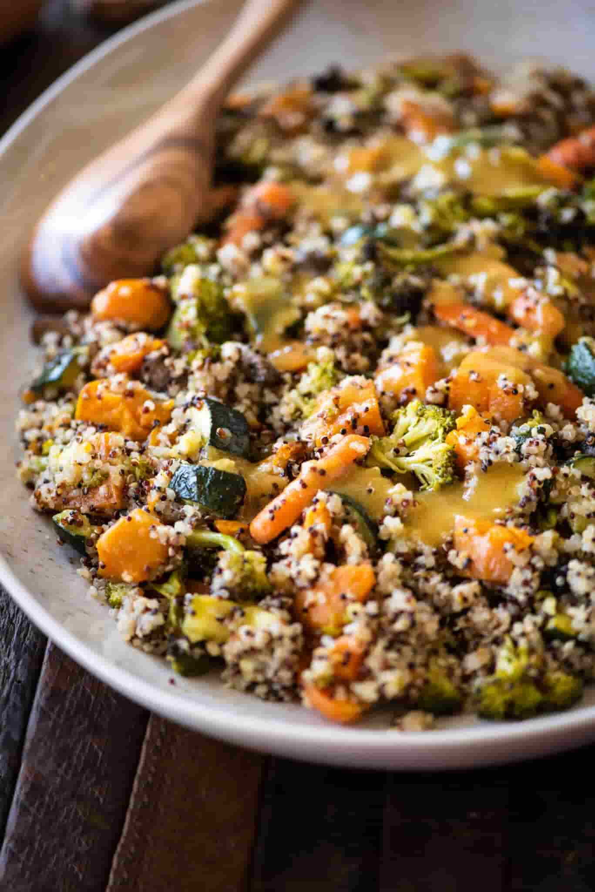
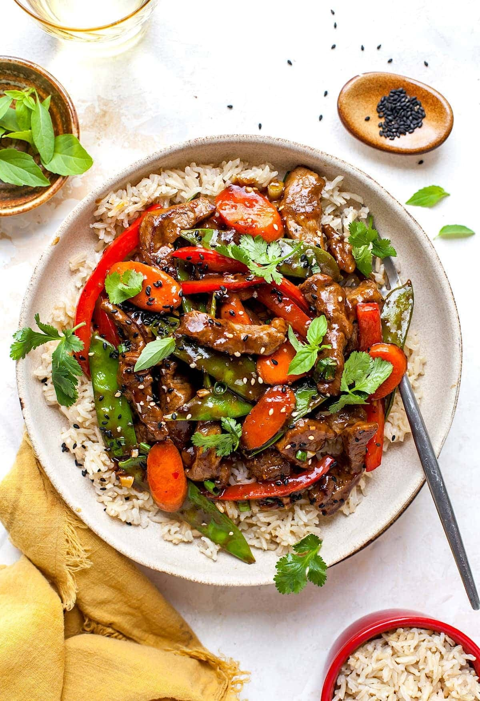
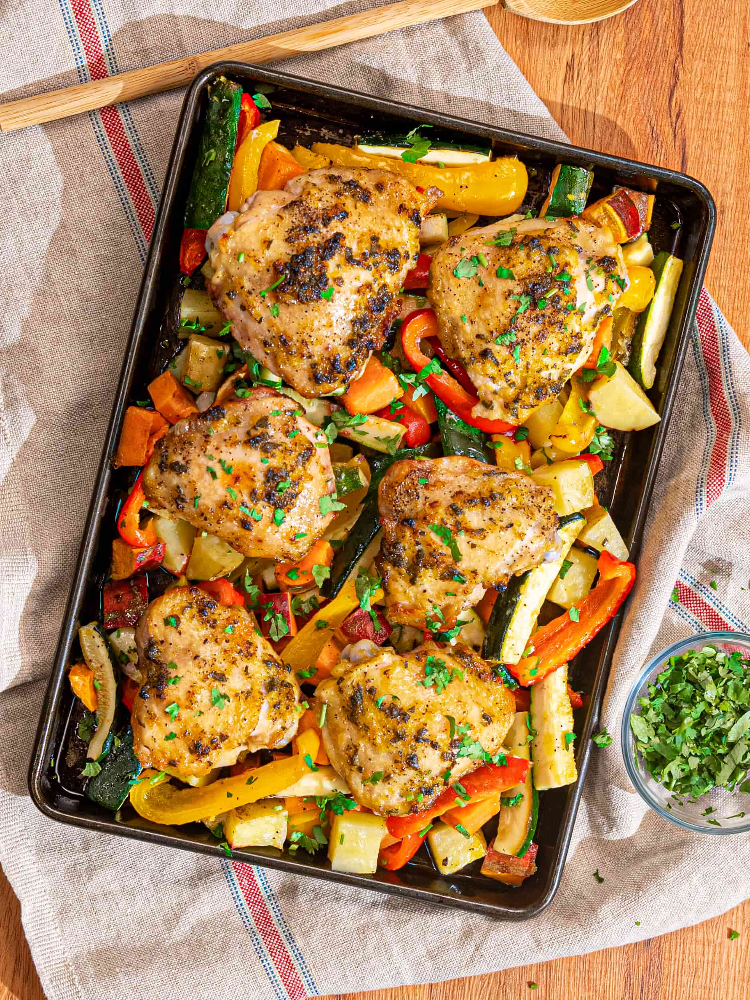
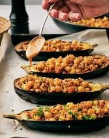
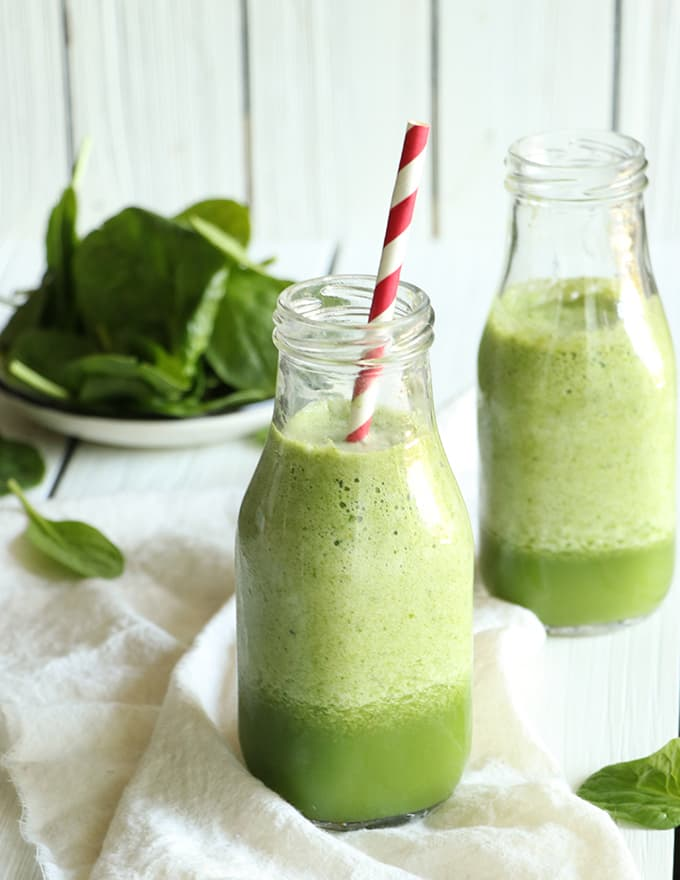
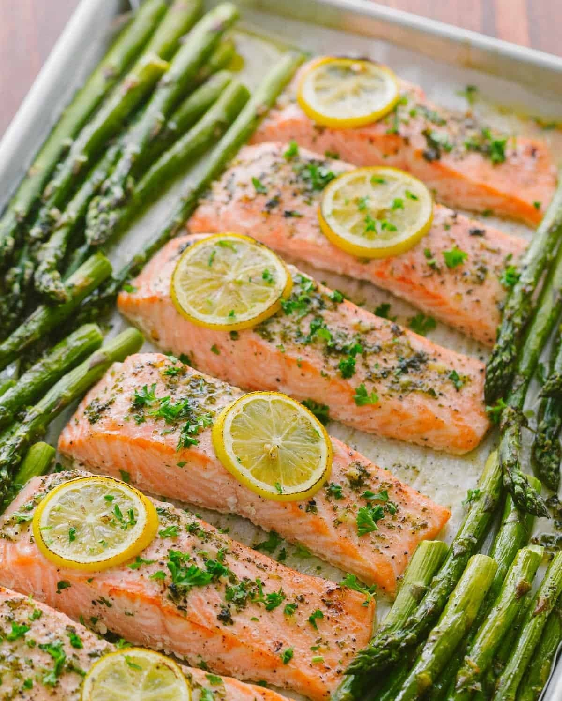

A quick and nutritious breakfast that prepares itself overnight. Rolled oats, creamy yogurt, and chia seeds soak together for a satisfying base, topped with fresh berries for antioxidants and natural sweetness. Rich in fiber and protein, this energizing meal keeps you full and fueled until lunchtime

Apple Cinnamon Oat Smoothie
This creamy apple cinnamon oat smoothie blends classic flavors into a nutritious, grab-and-go breakfast. With fiber-rich oats, fresh apple, and a touch of cinnamon, it’s both satisfying and energizing. A simple yet filling drink that supports digestion and fuels your morning with natural goodness.
Veggie Stir-Fry with Brown Rice
A colorful stir-fry that brings together crisp vegetables, hearty brown rice, and a light soy-ginger glaze. This dish is rich in fiber, vitamins, and plant-based antioxidants while keeping calories balanced. Quick to prepare, it’s the perfect go-to for a satisfying, energizing, and nutrient-packed weekday meal.

Avocado & Black Bean Wrap
This hearty wrap combines creamy avocado, protein-rich black beans, and crisp vegetables for a nourishing, on-the-go meal. Packed with healthy fats, fiber, and plant-based protein, it supports digestion and sustained energy. Quick to assemble, it’s ideal for lunch or a light dinner that satisfies without compromise.
Grilled Salmon & Veggie Quinoa
A wholesome dish that balances lean protein, fiber, and vibrant flavors. Juicy grilled salmon pairs perfectly with fluffy quinoa and roasted vegetables, creating a nutrient-packed meal. Rich in omega-3s, vitamins, and minerals, it supports energy, heart health, and overall wellness—making it an ideal weekly staple.

Veggie Pesto Pasta
A wholesome twist on a classic, this pasta dish combines nutty whole-wheat noodles with homemade basil pesto and colorful roasted vegetables. Rich in fiber, healthy fats, and antioxidants, it delivers lasting energy and heart health benefits. Light yet satisfying, it’s a perfect balanced meal for busy weekdays.

Quinoa & Roasted Veggie Salad with Lemon Dressing
Light, refreshing, and full of nutrients, this quinoa salad makes clean eating easy. Packed with fiber, plant-based protein, and antioxidants from colorful roasted vegetables, it’s both satisfying and energizing. The zesty lemon dressing ties it all together, making this a perfect meal-prep or quick lunch option.

Spicy Beef & Veg
This high-protein stir-fry combines lean beef strips with colorful vegetables and a kick of chili and ginger to rev up metabolism and bonus it goes well with rice. Packed with iron, antioxidants, and fiber, it fuels energy and supports muscle health. Quick to prepare, it’s a bold, flavorful option for a nourishing midday meal.

Lemon Herb Chicken with Roasted Veggies
This flavorful dinner combines juicy chicken breast marinated in lemon and herbs with a rainbow of roasted vegetables. High in lean protein and antioxidants, it helps repair muscles and supports metabolism. A wholesome, satisfying option for busy evenings without compromising taste or nutritional balance.

Stuffed Eggplant with Quinoa & Veggies
A plant-based dinner that doesn’t compromise on flavor. Eggplants are roasted until tender, then stuffed with quinoa, peppers, onions, and herbs for a fiber-rich, antioxidant-packed dish. Light but filling, it supports digestion and offers a delicious way to end the day on a healthy note.

Green Energy Smoothie
This refreshing smoothie blends spinach, banana, and pineapple with creamy yogurt for a nutrient-packed drink. Rich in vitamins, minerals, and fiber, it supports digestion and provides a natural energy boost. Light yet filling, it’s a quick, delicious way to fuel your morning or recharge mid-day.

Baked Salmon with Garlic & Asparagus
A simple, elegant dinner featuring omega-3 rich salmon and fiber-packed asparagus. Baked with garlic, olive oil, and a squeeze of lemon, this dish supports heart health and boosts immunity. Light yet filling, it’s an easy way to nourish your body while enjoying rich, fresh flavors.